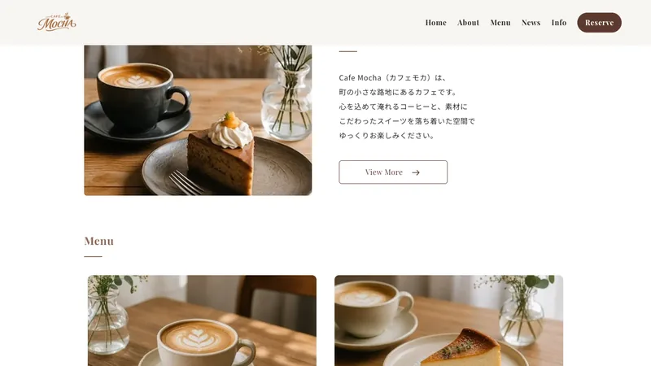
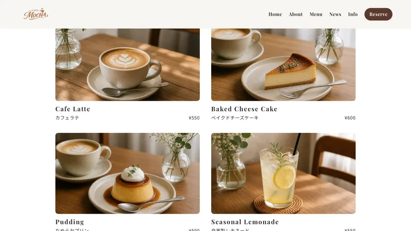
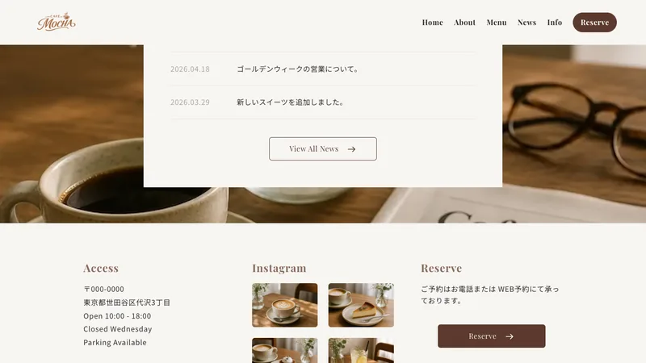

Case Study — Café
Cafe Mocha
「やさしい光がさす、居心地のよい時間。」を届けるカフェ「Cafe Mocha」の店舗サイト。お店の空気感をそのまま写し取り、「行ってみたい」と思ってもらえる見せ方にしました。

Overview
概要
| クライアント | カフェ「Cafe Mocha」 |
|---|---|
| 種別 | 店舗サイト（コーポレート） |
| 担当範囲 | 情報設計 / デザイン / フロントエンド実装 |
| 期間 | 約1.5ヶ月 |
| 使用技術 | HTML / CSS(SCSS) / JavaScript |
Client & Target
クライアントとターゲット
クライアントは、ていねいに淹れる一杯と、ゆったり過ごせる時間を大切にするカフェ「Cafe Mocha」。「毎日をちょっと特別にする場所」という想いを、来店前の人にも感じてほしい——そんなご相談でした。
届けたいのは、忙しい日常の中で、ひと息つける場所を探している方。スマートフォンで店内の雰囲気やメニューを眺めて、「今日、行こうかな」と思ってもらうことを意識しました。
Problem & Objective
課題と目標
お店の心地よさやこだわりは、実際に来てもらえれば必ず伝わる。けれどWeb上では、その空気感がうまく伝わりきっていませんでした。
そこで目標を二つに置きました。「店内にいるような居心地のよさを、画面越しに伝えること」、そして「メニューやアクセスなど、来店前に知りたい情報へすぐ届くこと」。
Solution
解決アプローチ
写真を大きく使い、温かみのある配色とゆったりした余白で、お店の空気をそのまま画面に持ち込みました。スクロールするほど、店内をゆっくり巡っているような気持ちになる構成にしています。
メニューは写真と価格をセットで分かりやすく並べ、アクセスや予約への導線も迷わないよう整理しました。

Design
デザインの工夫
コーヒーの温度が伝わるような、ブラウンとクリームを基調とした配色に。料理や店内の写真を、いちばん美味しそう・心地よさそうに見せることを基準に、余白をたっぷり取りました。
主役はあくまで写真。文字や装飾は控えめにして、お店の雰囲気の邪魔をしないようにしています。


Development
実装のこだわり
来店前のスマホ閲覧を想定し、モバイルを基準に実装しました。写真の多いページなのでWebP化と遅延読み込みで軽さを保ち、スクロールに合わせたゆるやかな演出で、ページをめくるような心地よさを添えています。
Result & Point
成果とポイント
目指したのは、来店前にお店の雰囲気をそっと確かめられる場所。画面越しでも店内の居心地が伝わり、「今日、行こうかな」と思ってもらえることを意図しました。
見どころは、写真を主役にした余白の設計と、温かみのある配色。画面の向こうに、お店の居心地をそのまま届けることを目指した一例です。